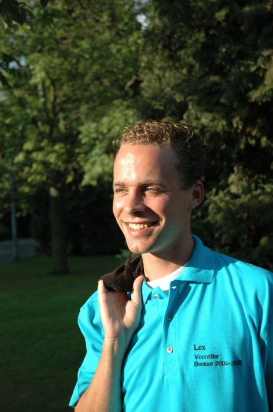

|  |
Slechts kort is Lex lid van ESMG Quadrivium. Toch loopt hij al een jaar rond in de vereniging, heeft hij Auletes ondersteund als pianist en zingt hij mee bij Vokollage. Maar dit jaar gaat hij pas echt naam maken: als voorzitter tijdens het achtste lustrum van Quadrivium! Terug naar de groepsfoto |